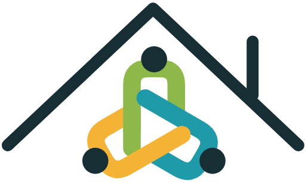

HFC Foundation+92 322 071 1929
Why Routine Helps a Child Feel Safe
Predictable days give a child something to hold on to. Here is why that matters most for children who have lost a lot.
Section 1 · Intro
Children cannot control much of their world. They do not choose where they live, who looks after them or what happens next. A steady routine gives them a small piece of the world that they can count on.
Predictable Days Calm a Worried Mind
When a child knows what comes next, meals, school, homework, play and bedtime, her mind has less to guard against. Worry takes up energy that she could be using to learn, to play and to make friends. A routine takes that worry away.
Routine Builds Trust
Trust grows when the same things happen at the same times, and when the adults who do them turn up. A child who has been let down learns, slowly, that this place is different. It is the daily showing up that does it, more than any single big gesture.
Keep It Gentle, Not Rigid
A good routine is warm, not strict. It leaves room for play, for a bad day and for a surprise now and then. If something has to change, tell the child in advance, in simple words, so that change does not feel like another loss.
Small Habits That Help
- Eat meals together at roughly the same times each day.
- Keep a short, calm routine before bed, such as a wash, a story and lights out.
- Say good morning and goodnight to each child by name.
- Warn children before a change, and explain why it is happening.
Care Like This Needs Hands.
Your gift helps us give every girl the steady, thoughtful care these posts describe.